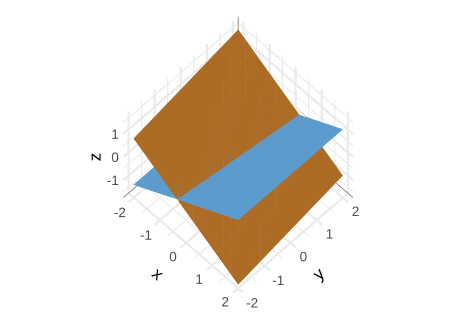
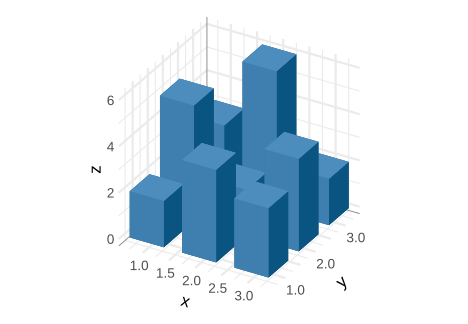
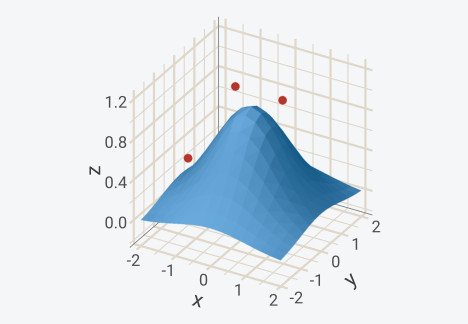

three-dimensional plots with ggplot2

ggplot3d draws three-dimensional points, paths, surfaces and solids with ggplot2.
The package extends ggplot2’s grammar of graphics with a z position scale and a camera. Each panel combines its layers into a scene, the collection of geometry used to determine which parts are visible. You can map variables to position, colour and fill, choose a view, and save the plot with ggsave().
ggplot3d supports:
- Surfaces with observations, contours and fitted values.
- Columns, extruded polygons and indexed meshes.
- Continuous, discrete and date/time z scales, including transformations and facets.
- Vector drawing and raster rendering from the same scene geometry.
Visibility explains how overlapping geometry is ordered and split.
Installation
The development version compiles C++17 code. Install build tools for your operating system:
| Operating system | Build tools |
|---|---|
| Windows | Rtools matching your R version |
| macOS | Run xcode-select --install in Terminal |
| Debian / Ubuntu | Install r-base-dev
|
Check that R can find the compiler:
pkgbuild::has_build_tools(debug = TRUE)Install the development package:
# install.packages("pak")
pak::pak("gcol33/ggplot3d")Usage
- Map three position columns with
aes(). - Add a three-dimensional layer and
coord_3d().
The data below contain a regular grid of x and y positions and a height z. A surface connects neighbouring grid positions. The point layer marks selected positions above and below that surface.
library(ggplot2)
library(ggplot3d)
surface <- expand.grid(x = seq(-2, 2, length.out = 15),
y = seq(-2, 2, length.out = 15))
surface$z <- with(surface, exp(-(x^2 + y^2) / 2))
observations <- surface[c(49, 73, 97, 121, 145, 169), ]
observations$z <- observations$z + c(0.3, -0.3, 0.3, -0.3, 0.3, -0.3)
ggplot(surface, aes(x, y, z = z)) +
geom_surface_3d(fill = "#2E6F9E") +
geom_point_3d(data = observations, colour = "#B5342B", size = 3) +
coord_3d()The result is a ggplot object. Layer geometry is depth-sorted together within the panel, including where the surface covers a point.
Intersecting surfaces
Each surface has its own data and fill. Their intersection determines which pieces are visible from the chosen camera.
first <- surface
first$z <- with(first, 0.6 * x)
second <- surface
second$z <- with(second, -0.6 * x + 0.2 * y)
ggplot(first, aes(x, y, z = z)) +
geom_surface_3d(fill = "#2E6F9E") +
geom_surface_3d(data = second, fill = "#9E5E0F") +
coord_3d(azimuth = -45, elevation = 60)
Columns
Map z to the top of each column. The default baseline is zero; zmin supplies a baseline from the data.
columns <- expand.grid(x = 1:3, y = 1:3)
columns$z <- c(2, 4, 3, 5, 2, 4, 3, 6, 2)
ggplot(columns, aes(x, y, z = z)) +
geom_col_3d(fill = "#2E6F9E", width = 0.65, depth = 0.65) +
coord_3d()
Raster output
A raster backend draws the scene into pixels at the requested resolution. It is useful for dense geometry and fixed-size images. Set it inside the coordinate system.
raster_plot <- ggplot(surface, aes(x, y, z = z)) +
geom_surface_3d(fill = "#2E6F9E") +
geom_point_3d(data = observations, colour = "#B5342B", size = 3) +
coord_3d(backend = backend_3d("raster", dpi = 144, antialias = 2))
raster_plot
ggsave("surface.png", raster_plot, width = 5, height = 4.5, dpi = 144)Documentation
Start with Get started to create and save a plot.
- The z scale: transformations, categories, limits and facets.
- Layers: points, paths, gridded surfaces, columns, distributions and intervals.
- Surfaces, solids and fields: meshes, fitted and level surfaces, hulls, solid glyphs and sweeps.
- Camera and framing: view angles, projections and plot bounds.
- Positioning groups and observations: jitter, dodge, stack and align labels.
- Axes, legends and pane styling: labels, colourbars and panel styling.
- Displaying intervals and summaries: supplied bounds and grouped summaries.
- Output backends: vector, raster and hybrid rendering, including PDF output.
- Lighting and surface styles: light presets, materials and shaded legends.
- Camera animation and interaction: camera paths and changing data.
- Visibility: how the scene resolves overlapping geometry.
Function help is available in R, for example ?coord_3d and ?geom_surface_3d.
Getting help
Send questions and bug reports to GitHub issues. Include a small reproducible example, the rendering backend, and sessionInfo().
Contributing
See Contributing for development setup and documentation checks.
Support
I’m a PhD student who builds R packages in my free time because I believe good tools should be free and open. I started these projects for my own work and figured others might find them useful too.
If this package saved you some time, buying me a coffee is a nice way to say thanks. It helps with my coffee addiction.
Acknowledgements
ggplot3d builds on ggplot2’s grammar, scales and extension classes, and R’s grid graphics system.
License
MIT, see LICENSE.md.
Citation
To cite ggplot3d in publications, use:
Colling G (2026). _ggplot3d: 3D Plots in the Grammar of Graphics_. R
package version 0.0.0.9000, <https://github.com/gcol33/ggplot3d>.BibTeX: